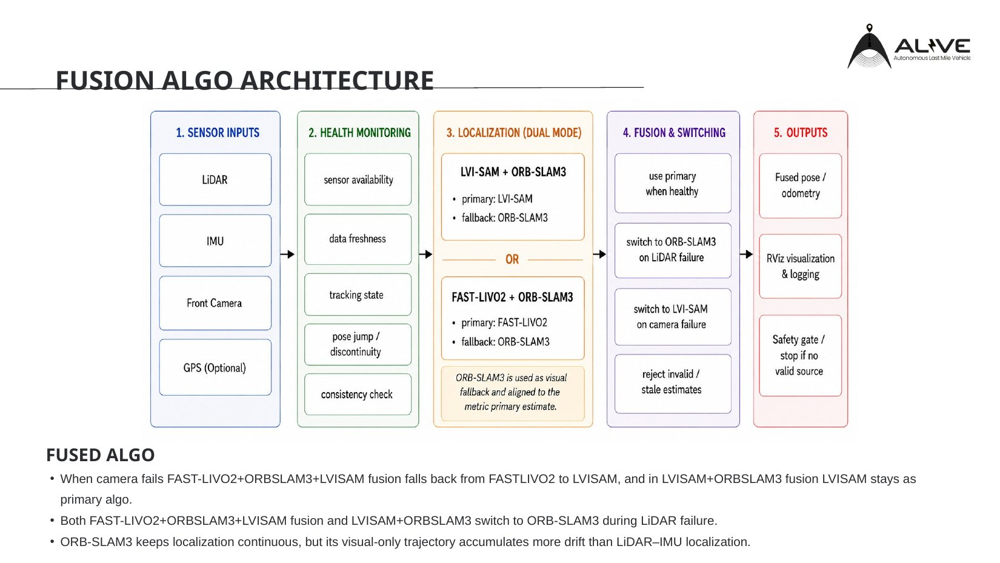
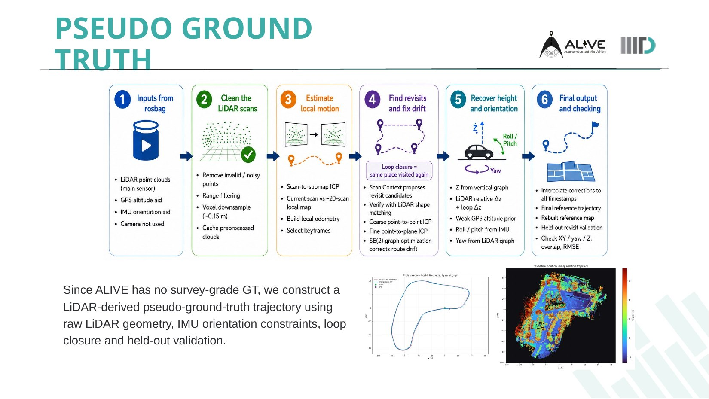
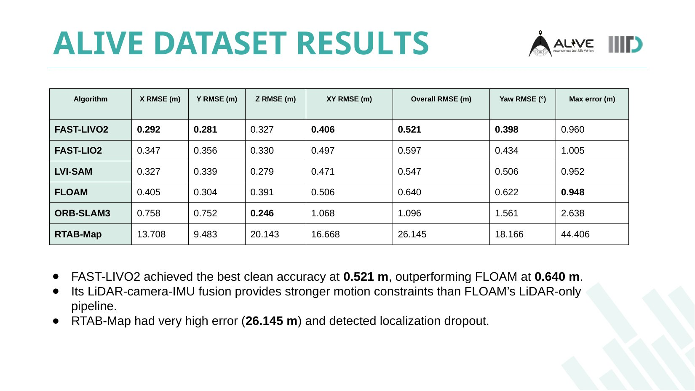
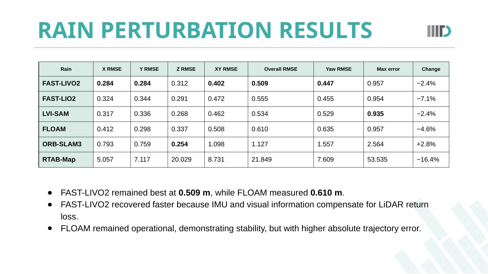
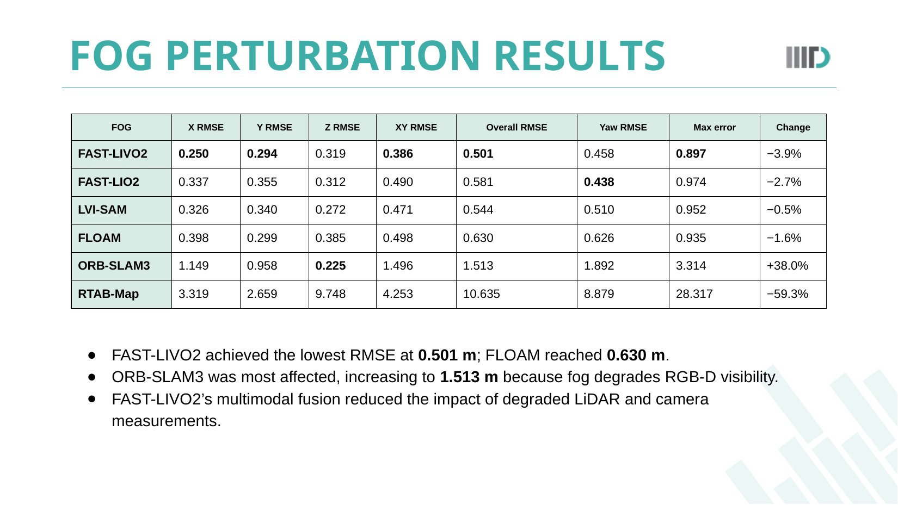

01 / NOWLive integrated navigation
October 2026 · Synchronized presentation of LiDAR localization, updated live planning, external cart footage and steering view.
AUTONOMOUS SYSTEMS / ROBOTICS R&D
From SLAM benchmarking and global relocalization to online planning, camera integration, and ROS1 ↔ ROS2 interoperability.

I worked on the autonomous golf cart as an evolving robotics system, not just one SLAM algorithm: benchmarking localization, rebuilding map alignment, integrating cameras, bridging ROS generations and diagnosing real navigation failures.
A campus autonomous vehicle must estimate its pose reliably, plan around moving obstacles, and run many software and hardware components together. Sensor drift, bad calibration, stale localization messages and brittle planners can all make a system look healthy while the vehicle behaves incorrectly.
Make the existing ROS-based golf cart more robust end to end: compare localization algorithms on repeatable data, keep FAST-LIVO2 local odometry aligned with a global map, investigate camera-based recovery, modernize planning and exchange data with ROS2 systems through Zenoh.
The work combines evaluation, integration and field debugging. In addition to localization research, the ROS1/ROS2 bridge allows newer ROS2-side components to interoperate with an existing ROS1 autonomy stack without rewriting it all at once. Live driving videos document progress; this is still a research vehicle, not a certified safety system.
IIIT Delhi ALIVE · VLP-16 LiDAR, IMU/GPS, RealSense & ZED X cameras, ROS1/ROS2, FAST-LIVO2, map scan-matching, TEB, RViz and Zenoh. Benchmarks and on-cart experiments have different validation levels.
My contribution to the project, separate from the broader team's work.
Benchmarked FAST-LIVO2, FAST-LIO2, LVI-SAM, FLOAM, ORB-SLAM3 and RTAB-Map using recorded trajectories and degradation tests; examined drift and failure cases instead of choosing an algorithm by a single run.
Worked on a map-referenced localization pipeline that combines FAST-LIVO2 odometry with LiDAR global relocalization and confidence checks, separating smooth local motion from map-frame alignment.
Integrated and debugged RealSense and ZED X data paths, camera extrinsics, LiDAR mount changes, timestamps and ROS frame conventions; investigated visual odometry and relocalization as fallback research.
Built ROS1 ↔ ROS2 communication using a Zenoh bridge so the legacy NUC-side localization, planning and monitoring stack can exchange information with ROS2-side vehicle components.
Participated in updating local navigation from roughly 7–8 precomputed candidate trajectories to online TEB planning and traced reverse-motion oscillation and delayed-pose behavior during tests.
Start with the latest integrated demo, then look back at an earlier field run. Compare the localization displays, planning visualization and the view from the vehicle to see how the system evolved. This is a progression of the engineering system, not a controlled before/after performance experiment.
October 2026 · Synchronized presentation of LiDAR localization, updated live planning, external cart footage and steering view.
March 2026 · Vehicle camera and RViz views during an earlier run, with localization and the cart's motion shown together.
The later recording demonstrates system integration, not certified autonomous operation. Reverse-motion oscillation and delayed pose updates are among the issues still being debugged.
A valuable part of this project was getting a mature ROS1 autonomy stack to communicate with newer ROS2-side systems. Rather than rewrite working localization and planning nodes, we used a Zenoh bridge across the compute-to-vehicle boundary.
Localization
Planning
Monitoring
Message / topic exchange
across ROS environments
Sensor interfaces
Vehicle feedback
Control-side integration
October 23, 2026 · Architecture walkthrough supplied with the project. It illustrates the bridge topology; it is not a network-throughput or latency benchmark.
Using Zenoh allowed the existing ROS1 localization and planning software to communicate with ROS2 components without a complete rewrite. The integration also required careful handling of message compatibility, topic routing, timestamps, and consistent interpretation of sensor and control data across the two systems.
I helped compare six localization approaches on recorded data and applied synthetic degradation to test their behavior when sensors become unreliable. We examined absolute trajectory differences, drift, yaw and dropout rather than treating a single screenshot as proof.
FAST-LIVO2 · ALIVE sequence
Same comparison · clean recording
LiDAR, visual and multimodal pipelines
| Estimator | Clean overall RMSE | Modality / observation |
|---|---|---|
| FAST-LIVO2 | 0.521 m | Best in this clean-run comparison |
| LVI-SAM | 0.547 m | LiDAR / vision / IMU fusion family |
| FAST-LIO2 | 0.597 m | LiDAR + IMU |
| FLOAM | 0.640 m | Earlier LiDAR-only baseline |
| ORB-SLAM3 | 1.096 m | Camera-based trajectory comparison |
| RTAB-Map | 26.145 m | Large deviation / localization dropout |
FAST-LIVO2 vs 0.610 m FLOAM
FAST-LIVO2 vs 0.630 m FLOAM
Reading the results correctly: These are comparative errors on recorded data against a LiDAR-derived pseudo-ground-truth reference—not independent survey-grade pose accuracy. Rain and fog were simulated by sensor perturbations, not measured in real storms or fog. The two tables and plots are from the localization benchmarking presentation.
Timestamp and transform VLP-16 scans, IMU readings and RealSense/ZED X camera feeds into a consistent ROS frame tree.
Use FAST-LIVO2 for smooth local LiDAR–inertial–visual odometry in the odom frame.
Match recent LiDAR structure against the campus map, validate the alignment and maintain map-to-odom correction separately from odometry.
Check localization confidence, sensor health and pose age; evaluate camera-only recovery as research, not an authorized autonomous fallback.
Feed pose and obstacles to the TEB local planner, replacing selection among a small set of fixed precomputed trajectories. Continue debugging reverse behavior and timing.
Use Zenoh-mediated ROS1 ↔ ROS2 data exchange between legacy compute and newer vehicle-side interfaces, avoiding an all-at-once rewrite.
What made the project difficult, and the choices I made while working through it.
A low-error path in clear weather says little about rain, fog, dropouts or poor visual texture; the E2O data also lack survey-grade ground truth.
I compared six estimation families against a LiDAR-derived pseudo-reference, stress-tested sensor perturbations and inspected trajectory overlays and recovery modes.
Evidence / boundary: Clean FAST-LIVO2 overall RMSE: 0.521 m versus 0.640 m for FLOAM on the evaluated ALIVE sequence, relative to a pseudo-reference—not true absolute pose accuracy.
Reorienting the LiDAR invalidates old map-frame assumptions; RealSense depth and ZED X timing/extrinsics can degrade fusion, and recording can introduce latency.
I debugged coordinate transforms, recalibration needs, camera stream behavior, message timestamps and recording delays independently, including the impact of a changed LiDAR mount.
Evidence / boundary: ROS bag replay, frame-tree inspections, camera/IMU synchronization tests and visual-versus-LiDAR trajectory checks.
FAST-LIVO2 produces relative motion, but a campus navigator also needs its correct position in a persistent map, including after drift or restart.
I separated FAST-LIVO2 odometry from global LiDAR scan-to-map relocalization and used geometric match validation before introducing map-frame corrections.
Evidence / boundary: Campus map and scan matching experiments; live validation and safe automatic handover are separate milestones.
The existing localization and planning stack runs on ROS1 while newer cart-side integrations use ROS2. Rewriting every node risks losing tested behavior.
I integrated data exchange through Zenoh so ROS1-side components can communicate with ROS2-side systems while retaining their native ROS runtimes.
Evidence / boundary: The accompanying October 2026 video visualizes the ROS1 NUC ↔ Zenoh ↔ ROS2 golf-cart architecture. It is an architecture walkthrough, not a latency benchmark.
Previously the cart selected the lowest-cost option from roughly 7–8 precomputed trajectories. That was less reactive. With live TEB planning, close obstacles can trigger repeated reversing and forward motion; delayed pose updates make control less predictable.
Moved toward live TEB trajectory optimization and traced the interaction among obstacle clearance, reverse permissions, stale pose timestamps and local goal selection. These remain active tuning and debugging tasks.
Evidence / boundary: Latest driving video shows live planning; reverse oscillation and pose delay are open issues, not solved claims.
An exploratory sensor-fusion architecture alongside actual vehicle recordings and localization experiments. The fusion diagram illustrates a design concept, not verified automatic failover.







“Real autonomy is not a single algorithm. It is the calibration, timestamps, maps, software interfaces and failure cases that make every part work together.”
The localization RMSE values come from a recorded-data comparison against a LiDAR-derived pseudo-reference rather than survey ground truth. Rain and fog are simulated sensor degradations. The Zenoh video explains the interoperability design; no bridge latency or production safety certification is claimed. Automatic visual fallback, reverse-planner stability and pose-delay issues remain under evaluation.